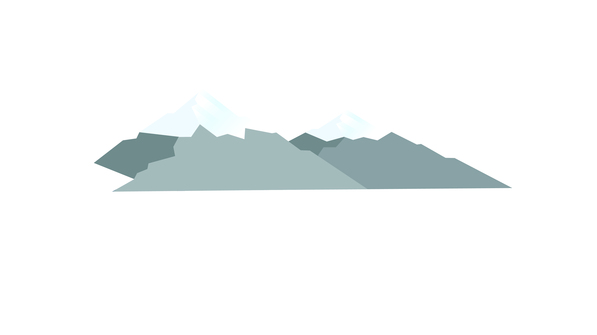
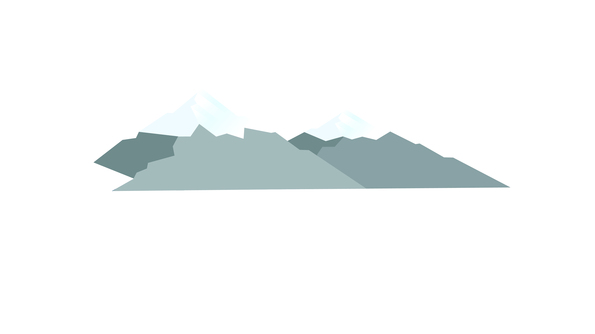

Polar bears are well adapted to survive in one of the harshest environments on our planet, the Arctic.
This is because of their thick fur and skin that helps them keep warm. The Arctic is warming twice as fast as it’s supposed to, causing the ice that polar bears
live on to melt away. The loss of sea ice also makes it harder for the polar bear to find food.
World Wildlife Fund - polar bears
Robin: We are now in the Arctic, home to about 4 million people.


 
